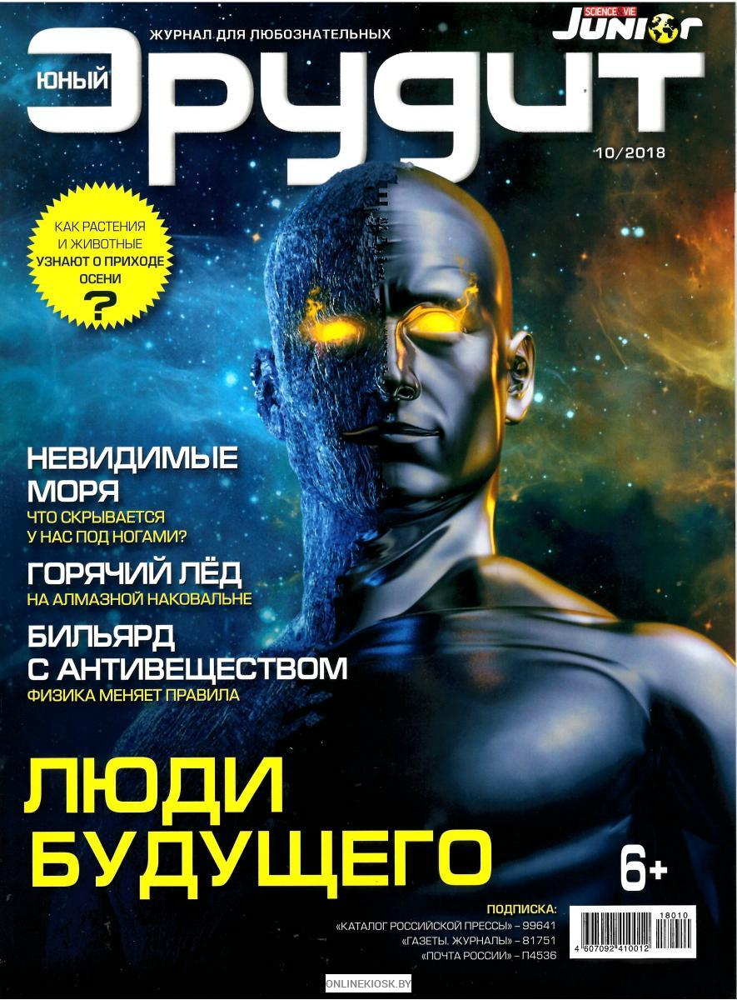
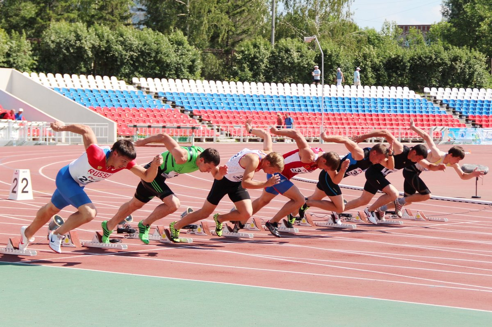
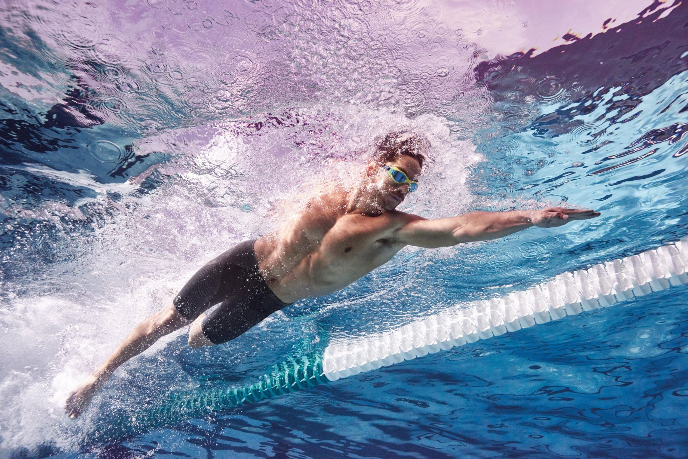

- Москва. Прогулка завершается. Июль 2020. Чем ближе к центру, тем пешеходное движение интенсивнее. На улицах уже официально разрешено ходить без масок. А в общественных местах и транспорте мало кто соблюдает масочный режим, который в Москве еще не отменен. На углу Петровки и Театральной площади расположен ЦУМ - центральный универсальный магазин. Со стороны Кузнецкого моста вход в ЦУМ выглядит достаточно скромно (само здание вытянулось дальше), но это важный магазин для всей страны. В 1885 году именно на этом месте открылся дом торговли "Мюр и Мерилиз", подобных которому не было, это был первый универсальный магазин в царской России. По тем временам помещения были просто огромными, а многообразные товары хорошего качества предлагались покупателям по привлекательным ценам. Но эти цены были фиксированными, торговаться было нельзя, как в других магазинах и лавках.А вот обменять или вернуть товар было можно. К тому же каждый год летом устраивали скидки и распродажи. Богатые покупатели и люди со средним достатком быстро оценили магазин "Мюр и Мерилиз". После революции он был национализирован, некоторое время спустя возобновил торговлю. 200 молодых комсомольцев были направлены на работу продавцами. Современное название ЦУМ получил в 1933 году. Сегодня это один из крупнейших европейских торговых центров , предлагающих своим покупателям товары класса "Люкс".
2021 - Ферма Радости- Ферма Радости. Мы поселились в домике номер 4 . Дом очень понравился - обстановка как у бабушки в деревне, при этом есть все удобства: горячая и холодная вода, душ, туалет. Очень порадовало радио, стилизованное под старинный радиоприёмник, но отлично ловил FM- канал. Кровати мягкие и удобные. Полотенца предоставляются. Все принадлежности для барбекю. В стоимость проживания входит баня и трехразовое питание. Есть чайник и холодильник. Отлично искупались в озере, вернее это запруда реки Сервеч. Можно позагорать на шезлонгах на пирсе. Рыбалка. Прокат велосипедов. Очень красивые места, до озера Свитязь 15 км, там тоже можно отлично отдохнуть. Wi- fi нет. Очень приветливые и доброжелательные хозяева. Парковка бесплатная .Понравилось всё .
Главные достижения за последние годы:
В свободное люблю читать научно популярные журналы и книги, занимаюсь легкой атлетикой и плаванием
  